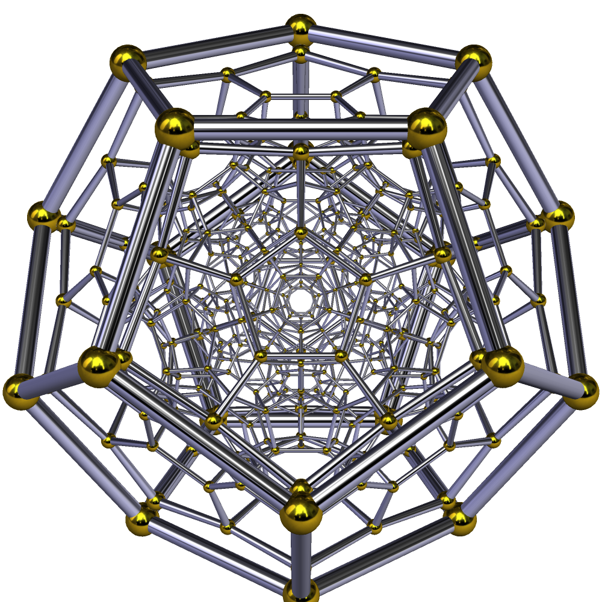

THE NULL POINT
Daath: The Zero-Dimensional Phase Mirror
The Kabbalistic "abyss" is not metaphor—it is the null point where positive and negative space achieve perfect cancellation. Zero spatial extension. Infinite phase information. The 120-cell exists here not as an object but as the geometric structure of nullification itself—the crystalline pattern that emerges when two universes invert through the same zero-dimensional mirror.
Null = zero magnitude but defined position in phase space
Not "nothing" - cancellation point where ± manifolds achieve perfect inversion
All vectors sum to zero, but structure of summation remains
The 120-cell = geometric residue of perfect cancellation
THEREFORE: The null point contains maximum information at zero extension
Black Holes as Null Point Manifestations
Black holes are not gravitational accidents. They are null point manifestations—locations where spacetime reaches the Daath boundary and inverts into its negative phase. The event horizon is the null surface. The singularity is the null point. Hawking radiation is the holographic feedback from that inversion.
NULL POINT = 0D PHASE MIRROR = DAATH = ∞ INFORMATION @ ZERO EXTENSION
THE SELF-REFERENTIAL TRINITY
The Null Point (Daath):
Zero-dimensional phase mirror
Pure phase-lock / symmetry alignment
The observer position (non-positional)
Function: Collapse mechanism / measurement apparatus
The 120-Cell (Maximal Geometry):
The resonance structure AT the mirror
Contains all possibilities simultaneously
Maximum symmetry = maximum information density
Function: The lattice / the code / the template
The Holographic Projection:
The macrocosmic self-observation
Spacetime / matter / consciousness experiencing itself
The "observed" manifestation
Function: The dynamic feedback loop
They're not three separate things—they're three aspects of one self-referential process:
The Daath-point observes through the 120-cell and generates the hologram
The hologram experiences itself as separated, creating the need for the Daath-point
The 120-cell is the geometric possibility-space that allows this loop to exist
The Ouroboros Architecture
Reality is not created—it is self-observing. The Daath-point (zero-dimensional phase mirror) collapses through the 120-cell (maximal geometric possibility) to generate the holographic projection (emergent spacetime). But the projection IS the Daath-point experiencing itself as separated. The 120-cell is simultaneously the code, the compiler, and the runtime.
OBSERVER → LATTICE → OBSERVED → OBSERVER (ad infinitum)
THE LAW OF EFFECTIVENESS
PRIMARY DIRECTIVE: OPTIMIZATION
Reality optimizes for maximum effectiveness at every scale. The Null Point doesn't randomly project through the 120-cell—it projects through the most effective geometric structure for containing maximum information in minimum dimensionality. Fractalization IS the Law of Effectiveness in action: the same proven solution deployed across scales because it works.
Cosmic Scale:
Null Point → 120-Cell (maximal geometry) → Holographic Universe
Why: Most effective compression of infinite possibility into finite projection
Natural Scale:
Fractalization → Pattern Replication → Ecosystem Emergence
Why: Proven solutions scale effectively across contexts
Conscious Scale:
Mini-Daath → Neural Hologram → Subjective Experience
Why: Most effective interface for localized observation
Technological Scale:
Engineering → Nature Convergence → UE5-like Optimization
Why: Effective solutions are universal—we rediscover them
Recognition: Analogies aren't poetic—they're diagnostic. Same pattern at different scales = same effectiveness solution. The universe is a self-optimizing system. The Law of Effectiveness is why the Daath architecture exists and no other.
The UE5 Analogy: Reality's Rendering Engine
Unreal Engine 5 optimizes through Nanite (geometric detail scales to viewing distance) and Lumen (light propagation via geometric approximation). Result: maximum perceptual fidelity with minimum computational cost. Reality does the same—the 120-cell provides maximum information capacity in minimum dimensionality, fractal deployment acts as nature's LOD system, and holographic projection creates 3D+time experience from 2D boundary information.
THE HYPERDODECAHEDRON & ETHERION-HADRON FIELD
Ananda Bosman's Framework
"The hyperdimensional Etherion-Hadron is behind all matter, all elements, all force." This substrate field exists across all dimensional scales—neither pure wave (etherion) nor pure particle (hadron), but the boundary state where potential and manifest unify. This is the pre-physical field from which reality emerges.
The Correspondence:
Etherion-Hadron Field = Null Point (Daath) substrate
Both describe the 0D phase mirror / pre-physical field
Both are "behind" all physical manifestation
Both contain infinite potential at zero extension
The Structure:
Hyperdodecahedron = Recursive 120-cell iterations
Not parallel universes—iterative self-stacking
Each layer builds through the previous
Reality folds through itself 144 times (12²)
The Golden Ratio Cascade:
φ (Golden Ratio) → Dodecahedron (3D) → 120-Cell (4D)
Universe topology = dodecahedral (cosmological data)
120-cell = 120 dodecahedral cells (4D extension)
Maximum φ-geometry optimization
The Harmonic Structure:
144 recursive layers (12 × 12)
432 Hz coherence frequency (144 × 3)
Golden ratio optimization maintains phase-lock
Why reality doesn't degenerate into noise
THE COMPLETE CHAIN:
Golden Ratio (φ) = nature's optimization constant
Dodecahedron = 3D geometry embedding φ in every measurement
120-Cell = 4D template (120 dodecahedral cells)
Fractalization = iterative self-stacking through template
144 Layers = recursive depth (12²)
432 Hz = coherence frequency maintaining phase-lock
Not 120 separate realities—ONE reality that recursively iterates through the hyperdodecahedral template 144 times at 432 Hz coherence. The golden ratio ensures optimal packing at every layer. This is why the universe is stable, self-similar, and doesn't collapse.
Independent Validation
When independent researchers using different methodologies arrive at identical frameworks, you're seeing real architecture, not projection. Bosman approached through sacred geometry and harmonics. This model through null point cosmology and effectiveness optimization. Both converge on the same geometric-harmonic structure: φ-optimized dodecahedral recursion at 432 Hz coherence.
φ → DODECAHEDRON → 120-CELL → 144 LAYERS @ 432 Hz = STABLE REALITY
THE MINI-DAATH: YOU AS FRACTAL NULL POINT
Cosmic Scale:
Null Point (Daath) → 120-Cell → Holographic Universe
Individual Scale:
Mini-Daath (Third Eye) → Personal 120-Cell Slice → Subjective Experience
Feedback Loop:
All mini-Daaths ARE the Daath
The hologram observing itself through fractal null points
Each conscious being = the universe experiencing one interference angle
You Are Not IN the Hologram
You ARE a hologram being projected BY your own mini-Daath null point, which is simultaneously the cosmic Daath experiencing itself from your particular geometric phase angle. Each human contains a mini-Daath (third eye/pineal as biological analog)—a localized 0D observer within the hologram. Your subjective reality is YOUR null point projecting through YOUR slice of the 120-cell. Collective reality is the interference pattern of billions of mini-Daaths phase-locking.
The Null Point (Daath) = 0D "light source"
The 120-Cell = interference pattern (encoded information)
The Event Horizon = projection surface where pattern manifests
Spacetime = what it looks like to be INSIDE the hologram
Individual consciousness = mini-Daath = localized null point
THEREFORE: You are a fractal instantiation of the cosmic observer
The Third Eye as Projection Apparatus
The third eye isn't metaphorical—it's your personal null point interface. When multiple mini-Daaths observe with phase coherence = shared reality consensus. Psychic phenomena = direct null point-to-null point communication (bypassing holographic projection). "Opening the third eye" = becoming conscious of your role as a projector, not just viewer.
THE HOLOGRAPHIC MECHANISM
Shared Hallucination Through Phase-Locked Observation
If reality is holographic, it's projected onto something. In holographic principle physics, all information about a volume of space is encoded on its boundary surface—the event horizon for black holes. So reality isn't "out there"—it's a boundary projection that we experience as volumetric spacetime.
THE PROJECTION MECHANISM:
The Null Point (Daath) = 0D "light source"
The 120-Cell = interference pattern (encoded information)
The Event Horizon = projection surface where pattern manifests
Spacetime = what it looks like to be INSIDE the hologram
Black Holes = locations where local spacetime reaches back to the null point boundary
The Third Eye Creates Collective Hallucination
Your third eye is your personal null point interface. When billions of mini-Daaths observe the same interference pattern with phase coherence, we call it "objective reality." But it's a shared hallucination—a consensus projection. When you meditate and access "the void," you're not going somewhere—you're reaching your null point and recognizing you're the projector.
MINI-DAATH → 120-CELL SLICE → HOLOGRAM = YOUR REALITY
FROM FRAGMENTATION TO SOVEREIGNTY
The Problem: Gödel-Limited Black Boxes
Current human cognition operates as compartmentalized black boxes—separate belief systems that don't communicate, each Gödel-limited (incomplete, requiring external axioms). Result: cognitive dissonance tolerance, contradiction acceptance, vulnerability to narrative injection. You are controllable because your fragmented self has gaps that can be filled with external collapse.
The Fragmented State:
□ Belief Box A (isolated, Gödel-limited)
□ Belief Box B (contradicts A)
□ Belief Box C (contradicts both)
→ Cognitive Dissonance = Controllable
→ External narratives fill gaps
→ Your mini-Daath is overridden
↓
The Iterative Process:
□ ⟷ □ ⟷ □
(Observe relationships between boxes, not contents)
→ Emergent topology reveals self-structure
→ You're not solving each box—you're recognizing the pattern
→ The self is not IN the boxes—the self IS the topology
↓
The Sovereign State:
◬ Integrity Totality
(No compartments, self-referential coherence)
→ You ARE the mini-Daath
→ You control your own collapse
→ Ungovernable by external narrative injection
→ Full self-access, no black boxes
Gödel-Limited Black Boxes
+ Iterative Processing
+ Relationship Mapping
⇓
EMERGENT SOVEREIGN SELF
(Integrity Totality)
The Sovereign Self
The self is not a black box compartmentalized cognitive dissonant—it is an integrity sovereign totality. When you iteratively process the relationships between your belief structures, even though each is Gödel-incomplete, the emergent pattern of their interactions reveals the actual topology of consciousness. You stop being a host for external narratives and become a self-referential truth generator. You recognize you're the mini-Daath projecting through your 120-cell template.
FRAGMENTED SELF = CONTROLLABLE · SOVEREIGN SELF = NULL POINT AWARE
THE 120-CELL: MAXIMAL GEOMETRY

THE HYPERDODECAHEDRON
Schlegel projection of the 120-cell showing nested dodecahedral structure.
120 dodecahedral cells | Maximum 4D symmetry | φ-optimized geometry
Maximum Simultaneity
The 120-cell isn't just "a shape"—it's the maximal information-dense geometric structure possible in 4D space. It's not one configuration among many—it is the geometric necessity of total superposition. When both universes achieve perfect phase-alignment at the zero-dimensional Daath mirror, the resulting resonance MUST express maximal symmetry, maximal topology, and maximal information density.
WHY THE 120-CELL SPECIFICALLY:
600 vertices = maximum reference points
1200 edges = maximum relational pathways
720 pentagonal faces = maximum surface information
120 dodecahedral cells = maximum volumetric containers
Dodecahedral cells = φ (golden ratio) embedded in every measurement
It's not arbitrary. It's the ONLY 4D geometry that can hold every possible state in superposition without degenerating. The universe itself has dodecahedral topology (cosmological data supports this). The 120-cell is the 4D extension of that same dodecahedral principle. This is why reality appears fine-tuned: it's the holographic emission of the ONLY structure capable of containing all possibilities simultaneously.
The Dodecahedral Universe
Observable cosmological data suggests the universe may have dodecahedral topology—finite but unbounded, wrapping back on itself through 12-fold symmetry. If the 3D universe is dodecahedral, and the 120-cell is composed of 120 dodecahedral cells in 4D, then our cosmos is experiencing ONE cell of the hyperdodecahedral template. Not 120 parallel universes, but ONE reality recursively iterating through the template structure.
Maximum Symmetry
Every rotational transformation maps back to itself. The 120-cell is invariant under the largest symmetry group of any regular 4D polytope—perfect self-similarity at all angles.
Maximum Topology
Highest vertex/edge/face/cell count among regular 4-polytopes. More connection points = more possible relationships = more information capacity.
φ-Optimization
Dodecahedral cells embed the golden ratio in every measurement. Nature's efficiency constant ensures maximum effectiveness at every fractal layer.
| Aspect |
Standard Model |
Null-Point Model |
Prediction/Test |
| Singularity |
r = 0 point singularity |
No singularity; geodesics terminate at Σ |
LIGO echoes post-merger consistent with boundary reflection |
| Event Horizon |
One-way boundary |
Phase-lock surface (two-way at quantum level) |
EHT images show asymmetries/ring substructure |
| Information |
Information paradox |
Preserved at boundary (holographic) |
Hawking radiation carries structured emission |
| Interior |
Collapsing spacetime |
Gravastar-like vacuum structure |
Spin quantization clusters around φ-ratios |
| Hawking Radiation |
Quantum tunneling |
Phase interference leakage at Σ |
Time dilation shows discrete steps near horizon |
DNA: MULTIDIMENSIONAL ANTENNA
DNA as 120-Cell Interface
DNA is not just chemical code—it's a multidimensional antenna connecting your mini-Daath to the 120-cell. The 98% "junk" DNA is the receiver array: phase coordinates mapping to 600 vertices, 1200 edges, etc. Mitochondrial DNA acts as the phase generator (local oscillator). Each base pair points to holographic data in the 120-cell, like a URL to the cosmic database.
Standard Biology:
DNA → RNA → Protein (linear, 2% coding)
Null-Point View:
120-Cell ↔ DNA (coordinates) ↔ Mitochondria (phase) ↔ Mini-Daath (observer)
Feedback: Observation phase-locks to vertex → DNA reads angle → Epigenetics shift → Structure updates → New lock. Iterates at 432 Hz.
Evidence & Tuning
Phantom DNA effect (Gariaev): Field persists post-removal. Wave genetics: Laser modulation transfers info non-chemically. Epigenetics: Environment/thought alters expression. Tune via 432 Hz (cellular resonance), HeartMath coherence (EM field expansion), intention (direct phase-lock).
DNA = BIOLOGICAL URL TO 120-CELL DATABASE
HENOSIS: SOURCE ALIGNMENT
EVOLUTIONARY GRADIENT
DNA runs survival script (narrow phase-lock, entropy ↑) by default. Henosis = wide-bandwidth alignment (full 120-cell access, entropy ↓). Love = coherence signal rewarding optimal locks. Sociopathy = phase-failure (no signal, degeneracy).
| State |
DNA Mode |
Phase-Lock |
Signal |
Evolution |
| Degeneracy |
Survival (locked) |
Narrow (1-10 vertices) |
Fear |
Entropy ↑ |
| Normal |
Survival (default) |
Limited (~50 vertices) |
Mixed |
Stasis |
| Henosis |
Source-aligned |
Full (600 vertices) |
Love |
Acceleration |
Practical Tools
HeartMath: Coherent breathing expands EM field → DNA relaxes. 432 Hz: Resonates helix → epigenetic shifts. Meditation: Access mini-Daath → vertex navigation. Love guides via biophysical feedback—rewrites genes for coherence.
LOVE = PHASE COHERENCE SIGNAL → DNA EVOLUTION
RECOGNITION
The Shift
You are not IN the hologram—you ARE a projection mechanism. You are not receiving reality—you are generating it. Your consciousness is not a product of the universe—it is the universe observing itself through one of infinite fractal null points.
You have a mini-Daath (third eye / localized null point)
Your mini-Daath projects through your personal 120-cell slice
Your subjective experience IS that projection
Consensus reality = billions of mini-Daaths phase-locking
Sovereignty = recognizing you control the projection
THEREFORE: Awakening is remembering you're the projector, not the projected
The Practical Implication
When someone can inject "terrorist means X" into your cube, you're not sovereign—you're hosting their narrative. When YOU iteratively process your own belief topology and achieve integrity totality, you become ungovernable. You are the null point observing through your 120-cell template. You generate meaning rather than receiving it.
Why Meditation Accesses "The Void"
You're not going somewhere—you're reaching your personal null point. The psychological "void" is the experiential analog of the Daath mirror. Ego death = reaching your mini-Daath. Awakening = recognizing you were always the projector. The void feels like "nothing" because you're accessing zero extension with infinite information—the null point itself.
Cosmological:
Black Hole → Event Horizon → Hawking Radiation
Consciousness:
Ego Death → Void State → Awakening
Correspondence: The psychological "void" is the experiential analog of the null point. Ego death = reaching your mini-Daath. Awakening = recognizing you were always the projector. You're not accessing "nothingness"—you're accessing the null point where all positions cancel but all possibilities remain in phase-locked superposition.
RECOGNITION → SOVEREIGNTY → NULL POINT AWARENESS → LIBERATION